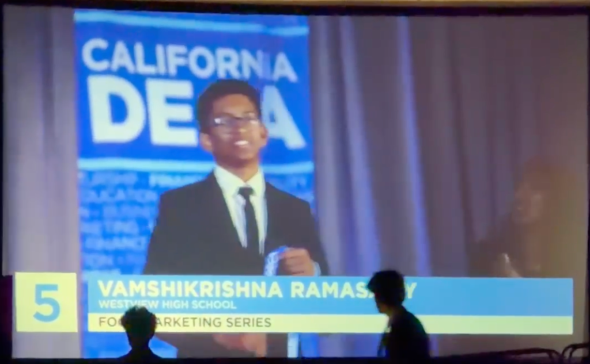
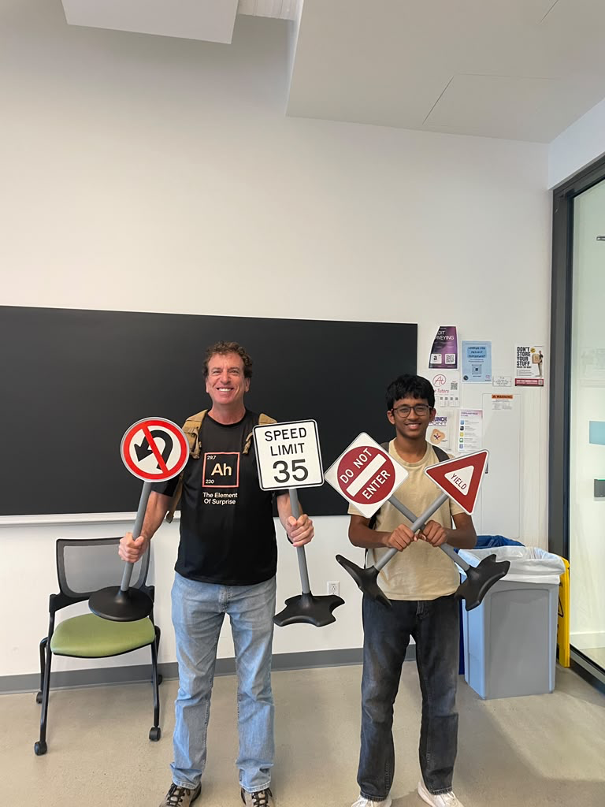

Best Presentation · TritonHacks 2026
01
Palimpsest
A social platform built in 48 hours to get people offline and connecting in person.
- SwiftUI
- Node.js
- Product pitch
(01—26)
I build useful software, run my own infrastructure, and turn hard ideas into things people can understand.
Explore↓Selected work
02 / 04
A social platform built in 48 hours to get people offline and connecting in person.
Official nonprofit website designed, built, and deployed to expand community reach.
Beyond localhost
Local hardware and VPS infrastructure running Linux, Docker, Proxmox, Ollama models, web services, and everything required to keep them alive.
$ docker compose ps
NAME STATUS PORTS
ollama running 11434/tcp
portfolio running 80/tcp
reverse-proxy running 443/tcp
$ systemctl status curiosity
● curiosity.service
Active: active (running)
Since: always_I’m a sophomore at Westview High School, class of 2028. I spend my time between full-stack development, competitive programming, debate, and business leadership—fields that reward the same habit: breaking difficult problems into clear decisions.
Current coursework includes AP Computer Science Principles, AP Computer Science A, AP Calculus AB, and AP World History.
Selected recognition
2024—2026

Placed fifth in Food Marketing Series at the California DECA State Career Development Conference, earning an invitation to international competition.
Advanced algorithms, graph theory, data structures, and dynamic programming.
Won for Palimpsest after building and pitching the product in under 48 hours.
Two second-place roleplays in financial consulting and business strategy.
9th at state qualifiers and 6th at SDIVSL Speech 2B.
Recognized for sustained volunteer service and community impact.
FreeCodeCamp certification earned through five applied projects.
Roles & leadership

UCSD REHS
Under Dr. Jack Silberman
Researching artificial intelligence and machine learning on edge systems through UC San Diego’s Research Experience for High School Students program.
Equality in Forensics
Leading technology initiatives, platform development, and digital infrastructure.
Westview DECA
Leading chapter budgeting, fundraising, and financial strategy.
Westview CyberPatriot
Managing team finances, budgeting, and fundraising support for the school’s cyber defense program.
Parliamentary Debate
Mentoring novice speakers, organizing practice, and competing undefeated at League 2A.
San Diego Tamil Palli
Building nonprofit infrastructure while mentoring younger students.
Have a hard problem?
Let’s make it legible.